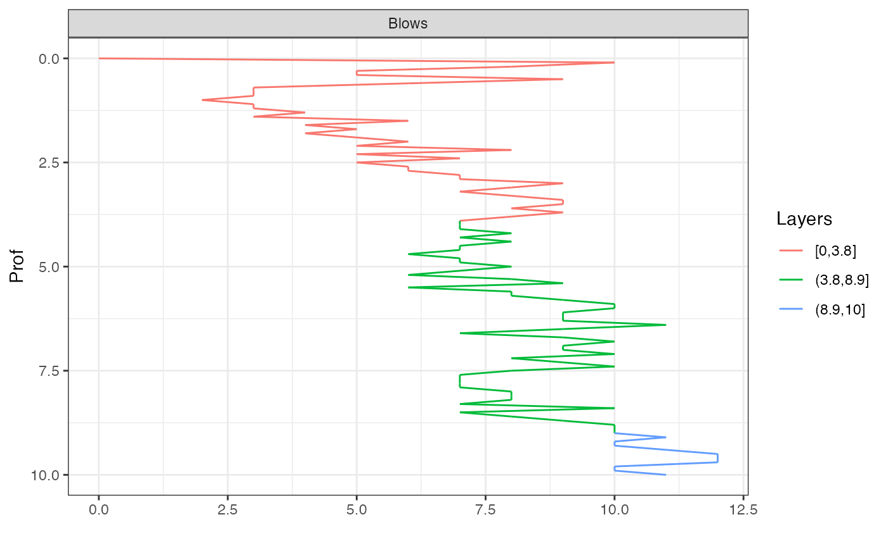
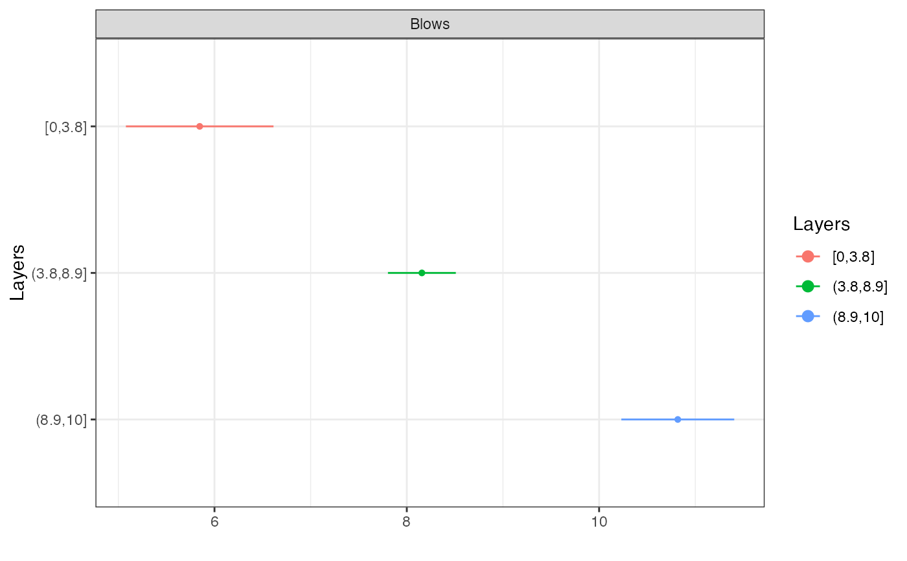
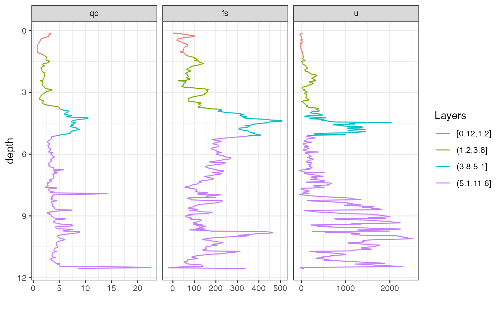
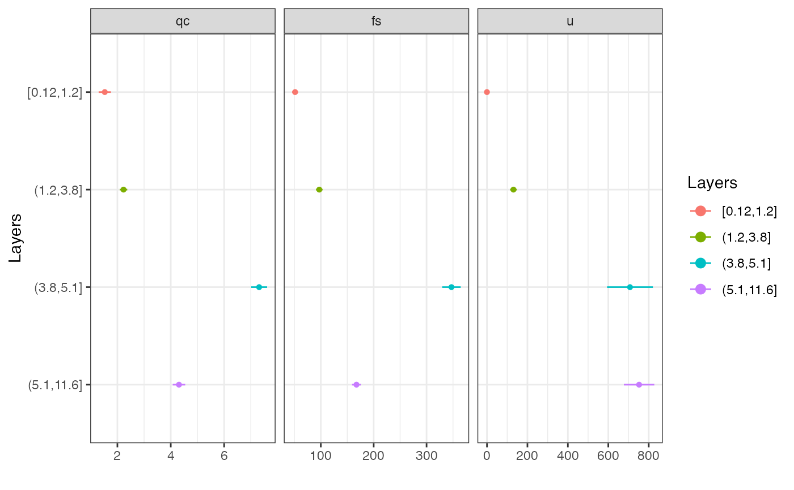

Plots a layered model and summarizes the statistics for each layer
Source:R/layers_window.R
layers_window.RdGiven a set of breakpoints (depths/distances), plots a layered model of the data against distance, plots the confidence intervals for each layer, and gives a summary table.
Arguments
- x
A data frame containing the location variable (depth or distance) in the first column, and the value(s) of interest in the rest of the columns
- breaks
A vector containing the breakpoints (from 'RI', 'Cohen d' or 'Mahalanobis D2')
- conf.level
Confidence level to use for plot and summary statistics (Default is 0.95)
Value
A ggplot and plotly objects showing the layered model, another showing the confidence intervals, and a summary table
See also
Other layer detection:
RI(),
T2_stat(),
T_stat(),
cp_aic_eta(),
cp_layers(),
sc_bic(),
sc_layers()
Examples
layers_window(DPM_data, breaks = c(3.8,8.9))
#> Warning: X11 error: GLXBadContext
#> Warning: 'rgl.init' failed, will use the null device.
#> See '?rgl.useNULL' for ways to avoid this warning.
#> $LayersGG

#>
#> $LayersLY
#>
#> $StatsGG

#>
#> $StatsLY
#>
#> $Summary
#> boundaries Property Obs Mean SD Min Max CI.lwr CI.upr MoE
#> 1 [0,3.8] Blows 39 5.85 2.370 0 10 5.08 6.61 0.768
#> 2 (3.8,8.9] Blows 51 8.16 1.250 6 11 7.80 8.51 0.352
#> 3 (8.9,10] Blows 11 10.80 0.874 10 12 10.20 11.40 0.587
#>
#> $ES
#> [1] 0.454
#>
layers_window(CPTu_data, breaks = c(1.2,3.8,5.1))
#> $LayersGG

#>
#> $LayersLY
#>
#> $StatsGG

#>
#> $StatsLY
#>
#> $Summary
#> boundaries Property Obs Mean SD Min Max CI.lwr CI.upr MoE
#> 1 [0.12,1.2] qc 55 1.530 0.849 0.75 3.47 1.30 1.76 0.230
#> 2 [0.12,1.2] fs 55 51.400 20.000 0.53 101.00 46.00 56.80 5.410
#> 3 [0.12,1.2] u 55 -0.263 20.000 -37.30 39.20 -5.66 5.14 5.410
#> 4 (1.2,3.8] qc 130 2.230 0.804 1.17 5.06 2.09 2.37 0.140
#> 5 (1.2,3.8] fs 130 97.100 35.800 23.90 181.00 90.90 103.00 6.210
#> 6 (1.2,3.8] u 130 131.000 94.200 -5.99 400.00 114.00 147.00 16.300
#> 7 (3.8,5.1] qc 65 7.310 1.210 4.69 10.60 7.01 7.61 0.300
#> 8 (3.8,5.1] fs 65 347.000 70.700 210.00 509.00 330.00 365.00 17.500
#> 9 (3.8,5.1] u 65 707.000 458.000 72.60 2040.00 594.00 821.00 113.000
#> 10 (5.1,11.6] qc 323 4.310 2.140 2.38 22.60 4.07 4.54 0.234
#> 11 (5.1,11.6] fs 323 167.000 76.300 -22.20 467.00 159.00 176.00 8.350
#> 12 (5.1,11.6] u 323 752.000 688.000 -54.80 2530.00 677.00 828.00 75.300
#>
#> $ES
#> [1] 0.282
#>